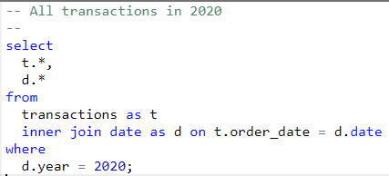
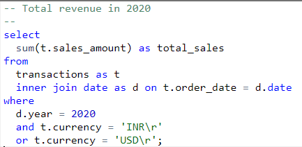
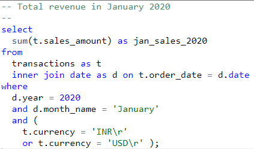
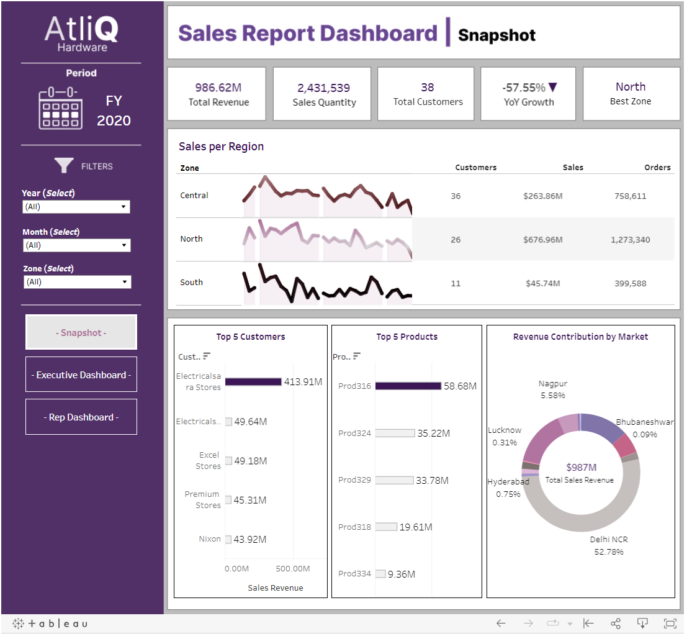
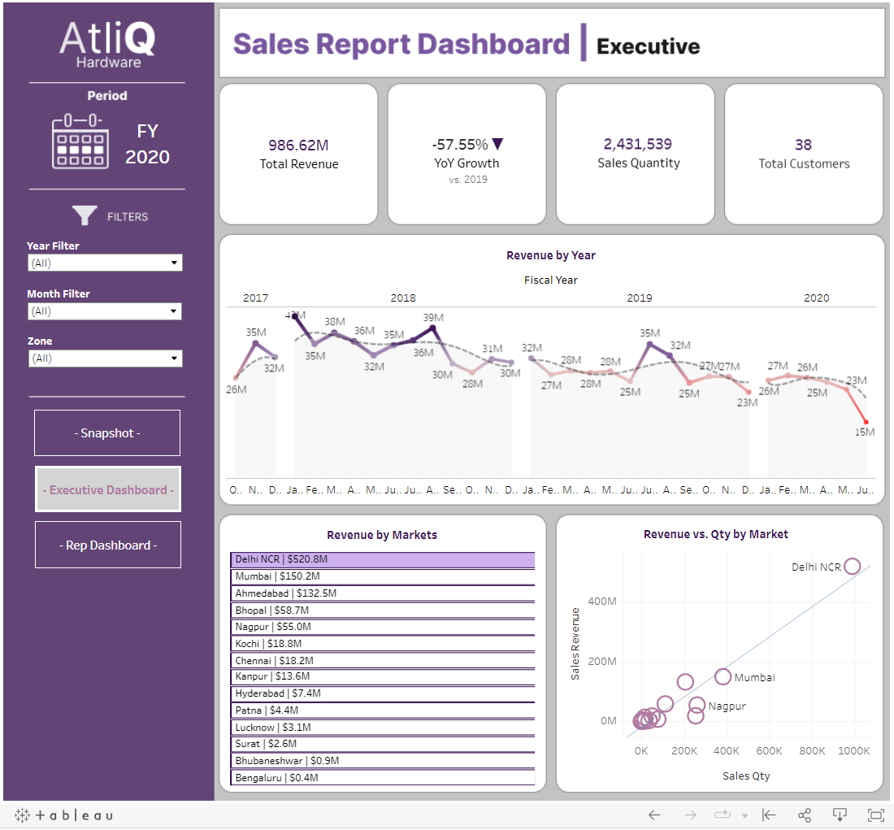
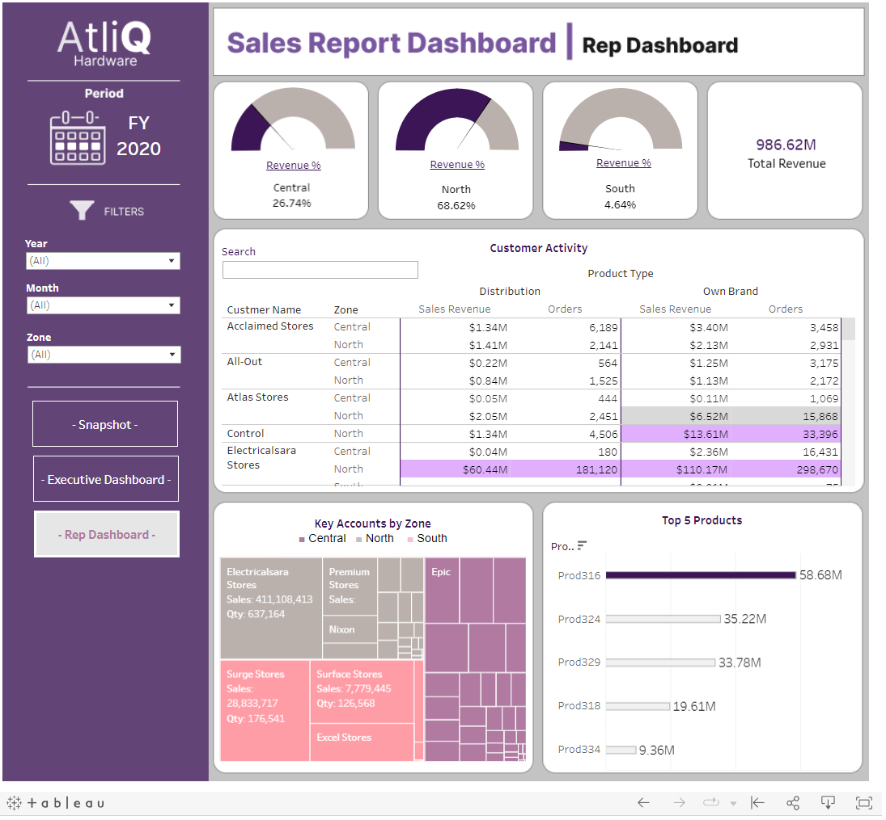

Converting Static Reports into Dynamic Dashbaords
Repository | Slideshow | Tableau Dasboard
Content Overview
- Presentation
- Background
- Business Request & User Stories
- Data Cleaning & Transformation (SQL)
- Data Modeling
- Final Dashboard
Presentation
Check out the Tableau Dashboard Here.Background
AtliQ Hardware is a hardware company based out of New Delhi India and services clients through its regional offices located throughout the country.
The company primarily sells computer hardware and peripherals to Indian electronic stores across three major zones: Central, North, and South India.
The Sales Director , Stephen A., desires immediate feedback from his reports to make actionable decisions. He currently relies on static reports that are provided
to him by his regional managers and requests a system that provides an accurate, timely, and reliable overview of the business.
Business Request & User Stories
Stakeholders:
- Sales Director | Wants an improved reporting process with real-time insights.
- Regional Managers | Wants a reduction in manual entry.
- Sales Representatives | Wants quicker access to customer data. (Marketing & Customer service want this too.)
- IT Team | Don't want me messing up their system!
Data Cleaning & Transformation using SQL
The company's IT team managed the OLAP RDBMS and permitted queries but did not allow me to 'update' or 'delete' activity. MySQL was used to test and explore the data prior to connecting the RDBMS to Tableau BI for analysis. Here are the results:
- The database managed by the IT team consisted of 5 tables made up of customers, date, products, transactions, and markets.
- The data covered all transactions from October 2017 to June 2020.
- Inconsistent Data included monetary conversions and missing market codes; Currency was converted and missing markets were dropped in the modeling phase.
- Data Exploration was performed in MySQL and found the following:
- 2020 revenues were -58% less than 2019 revenues
- 2020 YTD revenues for January were -45% less than January 2018 and -19% less than January 2019
- Dehli stores made up more than 50% of all total revenue
- I hypothesize that the COVID-19 pandemic may have impacted AltiQ's revenues
| Exploratory Queries (click images to enlarge) |
||
|---|---|---|
| Transaction Query | 2020 Performance Query | Year-over-Year Analysis Query |

|

|

|
Data Modeling
Below is the data model that was constructed after the tables were cleansed and loaded into Tableau:
Final Dashboard
The final dashboard meets Stephen's needs by allowing him to retrieve up-to-date reports at his convenience.
The dashboards also provide all users with dynamic and responsive insights into AtliQ's key metrics by regions, markets, customers, and products. Users can now track sales over time, compare it to goals, and quickly drill down into opportunities to target key accounts. The full interactive dashboard can be found
HERE
| Final Dashboards (click images to enlarge) |
||
|---|---|---|
| Main Dashboard | Executive Dashboard | Sales Rep Dashboard |

|

|

|